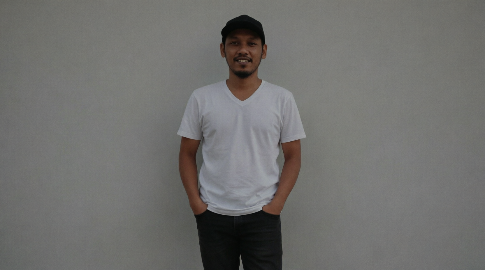

Hello, I'm
HASAN POHAN
AND THIS IS MY PORTFOLIO

AND THIS IS MY PORTFOLIO
1. PT. BERNOFARM PHARMATEUCAL
Jakarta, Indonesia
Senior Network Infrastructure Engineer | Maret 2012 - Januari 2020 Tanggung Jawab:
Merancang dan mengimplementasikan infrastruktur jaringan untuk 15 cabang perusahaan di seluruh Indonesia Melakukan maintenance dan troubleshooting router & switch (Cisco, MikroTik, Juniper) Mengelola tim teknis yang terdiri dari 5 engineer junior Implementasi sistem monitoring jaringan 24/7 menggunakan PRTG dan Zabbix
Pencapaian:
✅ Meningkatkan network uptime dari 97% menjadi 99.95% dalam 1 tahun
✅ Berhasil migrasi 500+ perangkat jaringan ke sistem terpusat tanpa downtime
✅ Mengurangi insiden jaringan sebesar 60% melalui proactive monitoring
✅ Implementasi SD-WAN yang menghemat biaya bandwidth 35% per tahun
Teknologi: Cisco IOS/NX-OS, MikroTik RouterOS, OSPF, BGP, MPLS, VLAN, VPN, Firewall
2. PT.Natura Laboratories dan PT.Quantum Laboratories
Jakarta, Indonesia
Network Engineer | Juni 2020 - Maret 2023
Tanggung Jawab:
Konfigurasi dan maintenance router Cisco seri 2900/3900 dan switch Catalyst 2960/3650 Setup dan manajemen VLAN, VTP, STP untuk jaringan 1000+ user Troubleshooting masalah konektivitas dan performa jaringan Dokumentasi topologi jaringan dan IP addressingPencapaian:
✅ Redesign jaringan LAN yang meningkatkan throughput 40%
✅ Implementasi QoS untuk prioritas traffic VoIP dan video conference
✅ Otomasi backup konfigurasi perangkat menggunakan script Python
✅ Training dan mentoring 3 junior technician
Teknologi: Cisco Packet Tracer, Wireshark, SolarWinds, Python (Network Automation), DHCP, DNS, NAT
3. PT.GUNUNG RAJA PAKSI
Jakarta, Indonesia
IT Support & Network Technician | Maret 2023 - sekarang
Tanggung Jawab:
Instalasi dan konfigurasi perangkat jaringan (router, switch, access point) Cable management dan troubleshooting fisik jaringan Support teknis untuk user internal dan operator produksi Support sofware HMI, PLC, TIA PORTAL Untuk sistem produksi Maintenance server dan perangkat keras
Pencapaian:
✅ Migrasi Jaringan Koneksi untuk alat alat industri
✅ Setup jaringan FO untuk IBA automations, Moxa automation, PLC automation
✅ Reduce response time troubleshooting dari 4 jam menjadi 1 jam
✅ Support sistem untuk operator saat produksi
Teknologi: Cisco switch, Windows Server, Linux Basic, Active Directory, Remote VNC, IOT
PROYEK UNGGULAN
📡 Proyek Implementasi Data HMI Produksi - PT.GUNUNG RAJA PAKSI (2023)
Role: Lead Network Engineer
Deskripsi: Membangun infrastruktur jaringan data untuk server di EAF, LF dan CASTER Hasil: Implementasi spine-leaf architecture dengan Cisco Redundansi penuh dengan dual-core switch dan multi-path routing 🔄 Proyek Migrasi Multi-Site VPN - PT Digital Infrastruktur Indonesia (2021) Role: Network Engineer Deskripsi: Migrasi 12 cabang dari VPN tradisional ke SD-WAN Hasil: Pengurangan latency antar cabang sebesar 45% Biaya operasional turun 30% per tahun Zero downtime selama migrasi 🔒 Proyek Network Security Hardening - PT Media Komunikasi Data (2018) Role: IT Support & Network Technician Deskripsi: Implementasi security baseline untuk seluruh perangkat jaringan Hasil: Port security dan 802.1X authentication ACL implementation untuk segmentasi jaringan Zero security breach dalam 2 tahun setelah implementasi 📜 SERTIFIKASI Cisco Certified Network Associate (CCNA) - 2022 MikroTik Certified Network Associate (MTCNA) - 2021 MikroTik Certified Routing Engineer (MTCRE) - 2023 ITIL Foundation v4 - 2022 CompTIA Network+ - 2020 🛠️ KEAHLIAN TEKNIS Networking: Routing: OSPF, BGP, EIGRP, Static Routing Switching: VLAN, VTP, STP/RSTP, EtherChannel Security: ACL, Port Security, VPN (IPSec, SSL), Firewall Protocols: TCP/IP, DHCP, DNS, NAT, SNMP, NTP Hardware: Cisco: Catalyst 2960/3650/9300, ISR 2900/3900/4000, Nexus 9000 MikroTik: hEX, hAP, CCR, RB series Juniper: EX Series, SRX Series Tools & Software: Monitoring: PRTG, Zabbix, SolarWinds, Nagios Analysis: Wireshark, GNS3, EVE-NG, Packet Tracer Automation: Python, Ansible, Bash Scripting Documentation: Visio, Draw.io, Confluence